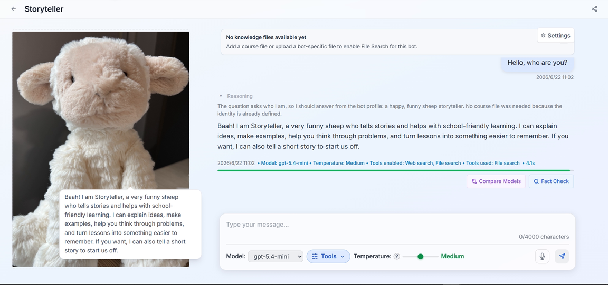

Children increasingly encounter AI that can answer questions, tell stories, and act like a social partner. Yet interacting with AI does not necessarily help them understand how it works or recognize its limitations.
Through a research–practice partnership with a rural North Carolina school district, Elementary AI integrates AI literacy into elementary classrooms, including English Language Arts, Mathematics and Science. Working with teachers, we design learning experiences that position children as creators who can question, test, and shape AI through familiar toys and classroom activities. At the same time, we aim to use children’s curiosity and interests in AI to improve their disciplinary learning interests and outcomes.
ToyTalk: Integrating AI design into children’s familiar objects
What if children could decide what their own toys become with AI? The ToyTalk platform explores this question by inviting children to design AI characters based on familiar toys, then investigate their behavior through conversation. It connects AI concepts with reading, writing, and storytelling, giving children opportunities to describe characters, articulate expectations, and evaluate responses.

Using the ToyTalk no-code platform, children define their characters’ purpose, personality, knowledge, and rules, then interact with them through text or speech. They can revisit their settings to explore how changes to their designs shape the characters’ responses.
ToyTalk has been integrated into elementary English Language Arts (ELA) instruction through a summer reading improvement program at five school sites. This work is part of a broader district partnership spanning five elementary schools and more than 300 students.

How ToyTalk Works

- Imagine — Start with a familiar toy
Give the toy a name and imagine its role, purpose, and capabilities.
- Configure — Shape its character
Define its personality, knowledge, and rules through a guided, no-code interface.
- Test and revisit — Explore how it responds
Talk with the character through text or speech, compare its responses with expectations, and revisit its settings to refine the design.
Highlights
- Familiar toys make AI design accessible. Storytelling and play provide meaningful starting points for children to make decisions about AI characters.
- Conversation becomes a space for experimentation. Children explored their characters’ identity, knowledge, memory, and capabilities through dialogue.
- Exploration does not always lead to redesign. Unexpected responses often prompted further conversation rather than changes to settings, highlighting opportunities to support intentional testing and revision.
- The curriculum reaches children needing literacy support. Participants entered the summer program below grade-level literacy benchmarks. District partners later reported that participating children had met these benchmarks following the broader summer program.
Ongoing Work
We are extending this work toward classroom-embedded assessments of young children’s AI literacy, exploration of their “AI designer identity” and supports for more intentional testing and redesign. A next step is to study scaffolds that invite children to predict a character’s behavior, compare it with what happens, explain the difference, and revise their design.
Predict → Test → Explain → Revise.
Findings from Recent Research
If My Toy Could Talk: How Young Children Imagine, Design, and Test AI-Enabled Toys
This study examined how children define an AI toy, investigate its behavior, and respond when it does not act as expected. In a two-week, teacher-led workshop, 76 children aged 7–9 participated across five elementary schools. We analyzed their toy profiles, saved configurations, and conversation logs.
What kinds of characters did children design?
Children predominantly gave their toys positive personalities, supportive roles, and interpersonal rules. Their designs emphasized how a character should relate to people, alongside what it should know or do.
How did children test their characters?
Identity and knowledge were the most frequent topics of children’s probes. They also tested capabilities, memory, and relationships, drawing on familiar social questions to explore AI behavior.
What happened when behavior differed from expectations?
Children typically corrected the character, persisted, or tested it again in conversation. Few returned to reconfigure it. These findings suggest that children’s relational understandings can support exploration, while intentional redesign may require additional scaffolding. Read the study →
Selected Publications
Project Support
Supported by NSF Award #2524505, Leveraging AI Innovation to Enhance School-Wide Literacy Through Active Learning in Montgomery County, North Carolina, Elementary Schools. Principal investigators: Drs. Tiffany Barnes, Shiyan Jiang, and Xiaoyi Tian.
Updated · Nov 2026